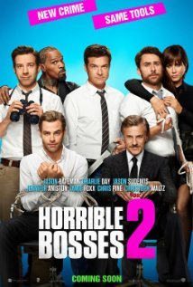

The Hunger Games: Mockingjay - Part 1 (2014)

Director Francis Lawrence
Stars Jennifer Lawrence, Josh Hutcherson, Liam Hemsworth, Woody Harrelson
Horrible Bosses 2 (2014)

Director Sean Anders
Stars Jason Bateman, Jason Sudeikis, Charlie Day